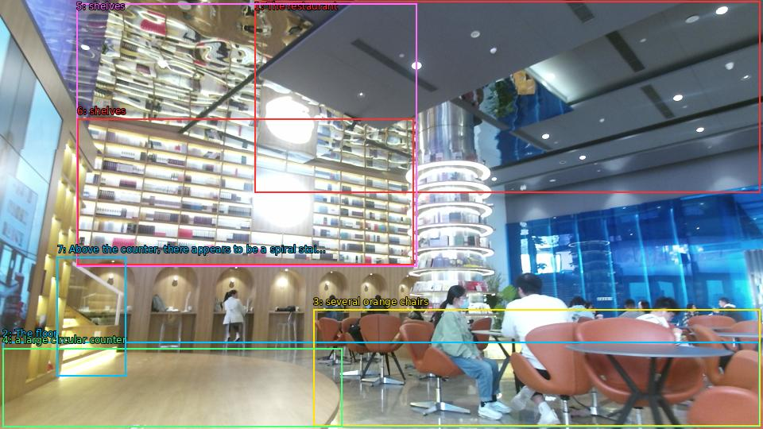

The image shows the interior of a modern restaurant or cafe. The restaurant has a high ceiling with recessed lighting and a large window on the right side. The floor is made of light-colored wood and there are several orange chairs and tables scattered throughout the space. On the left side of the image, there is a large circular counter with a few people sitting at it. In the center of the room, there are shelves with various items on them. Above the counter, there appears to be a spiral staircase with a glass railing. The overall atmosphere of the restaurant is bright and inviting.

Original · Caption raw · Grounding raw · Koordinate
Številke so lokalni ID regije. Dolge slikovne oznake so skrajšane; spodaj so celotne fraze. Napovedane regije se lahko prekrivajo ali opisujejo skupine.
| ID | Celotna fraza | bbox xyxy |
|---|---|---|
| 1 | The restaurant | [320.1600036621094, 1.8900001049041748, 956.6399536132812, 242.73001098632812] |
| 2 | The floor | [3.359999895095825, 430.1100158691406, 955.6799926757812, 537.5700073242188] |
| 3 | several orange chairs | [394.0799865722656, 389.6100158691406, 956.6399536132812, 536.4900512695312] |
| 4 | a large circular counter | [3.359999895095825, 438.21002197265625, 430.55999755859375, 537.5700073242188] |
| 5 | shelves | [96.47999572753906, 4.050000190734863, 524.6400146484375, 335.6100158691406] |
| 6 | shelves | [97.43999481201172, 149.85000610351562, 520.7999877929688, 333.45001220703125] |
| 7 | Above the counter, there appears to be a spiral staircase with a glass railing | [71.5199966430664, 323.7300109863281, 158.87998962402344, 473.8500061035156] |